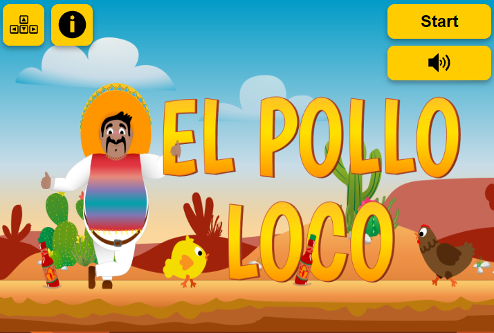
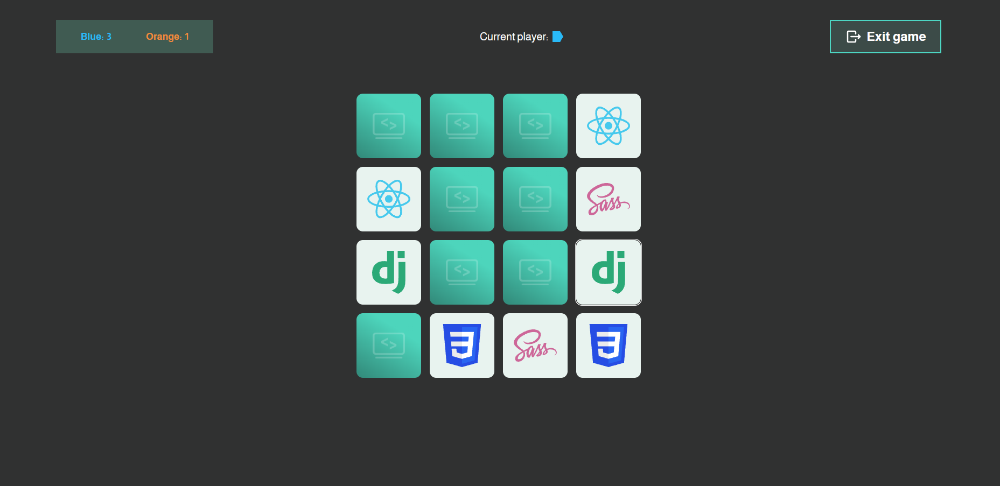
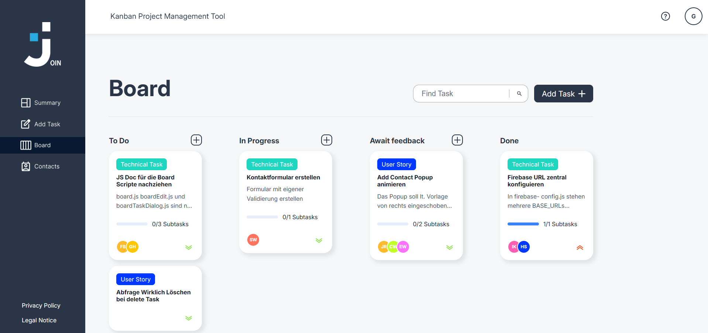

El Pollo Loco
Ein 2D Jump-and-Run-Spiel mit Animationen, Gegnern, Münzen und verschiedenen Spielmechaniken.
Ich entwickle moderne und benutzerfreundliche Webanwendungen und beschäftige mich leidenschaftlich mit der Webentwicklung.
Meine Projekte entdecken
Ein kleiner Einblick in meine Person
Ich bin Simon Wilmink und beschäftige mich mit der Entwicklung moderner Webanwendungen. Aktuell erweitere ich meine Kenntnisse in der Softwareentwicklung und arbeite an verschiedenen eigenen Projekten. Mein Fokus liegt auf Frontend-Technologien wie JavaScript, TypeScript, HTML und SCSS. Dabei lerne ich kontinuierlich neue Technologien kennen und setze mein Wissen praktisch um.
Technologien, mit denen ich arbeite
Eine Auswahl meiner bisherigen Arbeiten

Ein 2D Jump-and-Run-Spiel mit Animationen, Gegnern, Münzen und verschiedenen Spielmechaniken.


Eine Aufgabenverwaltung im Kanban-Stil zur Organisation und Verwaltung von Projekten und Aufgaben.
Du möchtest mit mir in Kontakt treten?
Besuche mich auf GitHub und entdecke meine Projekte.
Mein GitHub-Profil